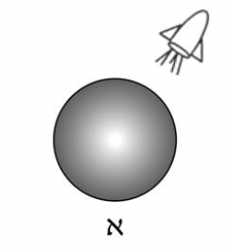
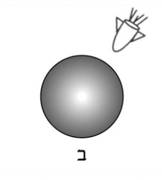
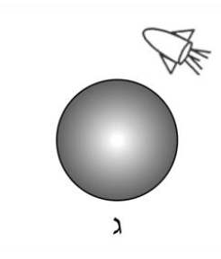
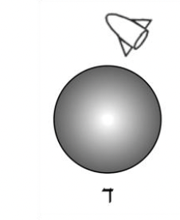
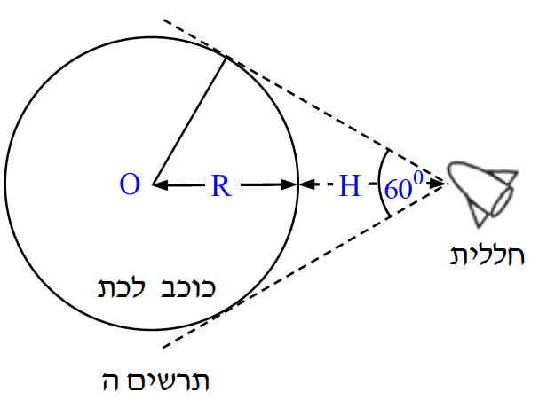

שאלה 5
אסטרונאוט בחללית רוצה לחקור כוכב לכת שצורתו כדורית.
בשלב מסוים של המחקר, האסטרונאוט בחללית נמצא במנוחה ביחס למרכז
כוכב הלכת. איזה מהתרשימים א-ד שלפניכם, מתאר נכון את מצב החללית ביחס
לכוכב הלכת? נמקו את תשובתכם.
(שימו לב: בתרשימים א-ג מנוע החללית פועל, ובתרשים ד מנוע החללית אינו פועל).
(7 נקודות)





האסטרונאוט מצא באמצעות מכשיר רדאר
כי החללית נמצאת בגובה H=107 m
מעל פני כוכב הלכת, וכי רואים את
כוכב הלכת בזווית ראייה של 60°.
O הוא מרכז כוכב הלכת (ראו תרשים ה).
חשבו את הרדיוס, R, של כוכב הלכת.
(4 נקודות)
בעזרת מנוע החללית, האסטרונאוט מכניס את החללית לתנועה מעגלית סביב כוכב הלכת
(בגובה H מעל פני הכוכב). האסטרונאוט מצא כי זמן מחזור התנועה של החללית סביב
כוכב הלכת הוא 150 דקות. הניחו כי צפיפות כוכב הלכת אחידה.
חשבו את המסה של כוכב הלכת. (8 נקודות)
חשבו את גודל תאוצת הנפילה החופשית על פני כוכב הלכת. (8 נקודות)
האם במהלך התנועה המעגלית נדרשת פעולת מנועי החללית כדי לקיים את התנועה
המעגלית?
אם כן - הסבירו את תפקיד המנועים. אם לא - הסבירו מדוע התנועה המעגלית
אפשרית בלי פעולת מנועי החללית.
(613 נקודות)